Productos Naturales
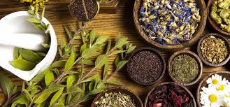
La obtención y extracción de productos naturales es un proceso clave en la elaboración de cosméticos, medicamentos, alimentos y productos de limpieza que buscan aprovechar los beneficios de la naturaleza. Son obtenidas directamente de fuentes naturales como:
• Plantas (hojas, flores, frutos, raices, cortezas)
• Animales (cera de abeja, lanolina)
• Microorganismos (enzimas, antibioticos)
• Minerales (arcillas, sales)
Metabolitos secundarios

¡Las plantas y hongos producen sustancias increibles! Los metabolitos secundarios de las plantas son compuestos químicos que no son esenciales para la supervivencia inmediata de la planta (como lo serían los azúcares o aminoácidos), pero que cumplen funciones ecológicas muy importantes: defensa contra depredadores, atracción de polinizadores, adaptación al entorno y más.
A pesar de no ser vitales para el metabolismo básico (como los "primarios"), estos compuestos son fundamentales para la interacción de la planta con su entorno y muchos tienen aplicaciones farmacéuticas, cosméticas, alimenticias y agrícolas.
En BOAchem nos enfocamos en la extracción de metabolitos secundarios de las plantas en forma de aceites esenciales, hidrolatos, extractos y fermentados.
Alcohol
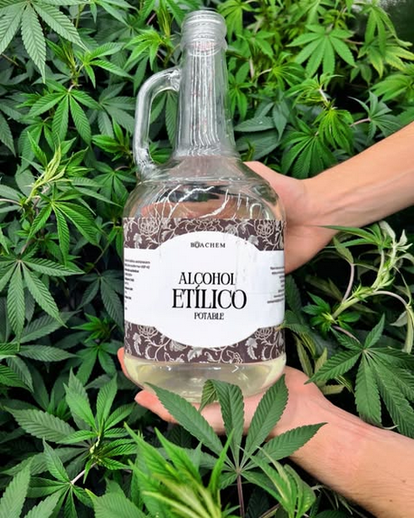
Obtenido por fermentación de azucares, principalmente caña, destilado en columna de fraccionamiento (equivale hasta a 200 destilaciones simples, usualmente se habla de "alcohol tridestilado", nuestro proceso es significativamente más potente que lo convencional) concentración de 96%, la destilación a la presión atmosférica de Bogotá permite la obtención de lotes de alcohol ligeramente más concentrados (96.4% - 96,7%).
!Lo mejor que puedes desear para la extracción de productos naturales! (ejemplo: tinturas madre).
 Alcohol COA Certificado de análisis. NTC 620, USP 42
Alcohol COA Certificado de análisis. NTC 620, USP 42
Glicerina
Obtenido por saponificación de aceites vegetales, principalmente palma. Este subproducto del proceso de fabricación de jabones naturales es una sustancia natural cuya principal caracteristica es su afinidad con el agua y propiedades reológicas (viscosidad), aporta hidratación y propiedades deseables a productos cosméticos y de aseo.
Aceites Esenciales
Producto estrella de las plantas, la "ESENCIA EN ACEITE", la tecnología permite la extracción de lo que hace única a la planta, directamente relacionado con su sistema inmunológico, los aceites escenciales son mezclas complejas de compuestos aromáticos (terpenos en su mayoria) obtenidos por hidrodestilación por arrastre con vapor, presentación de 20mL en hermoso frasco gotero de vidrio ambar. 100% natural.
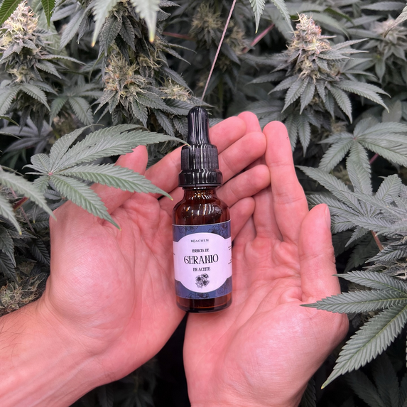
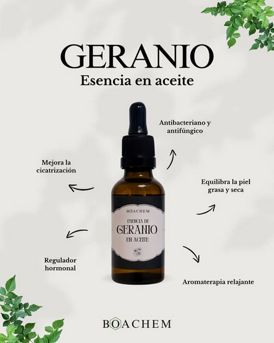
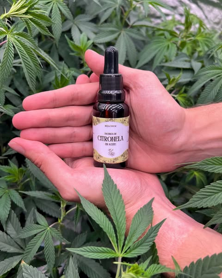
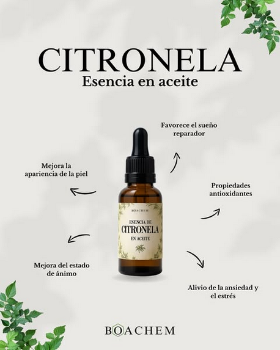
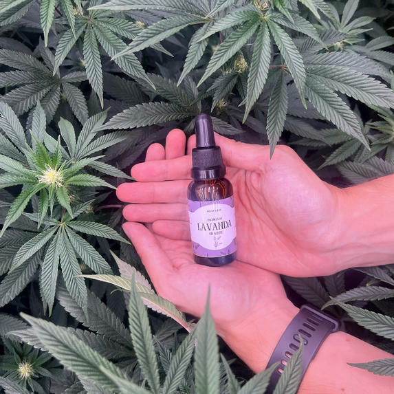
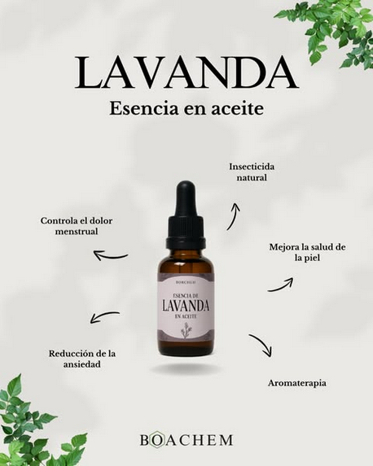
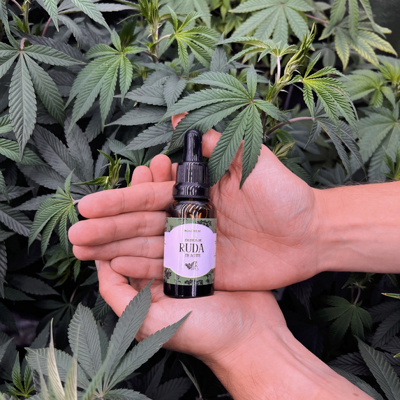
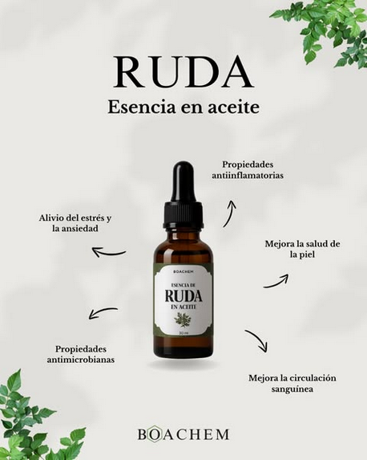
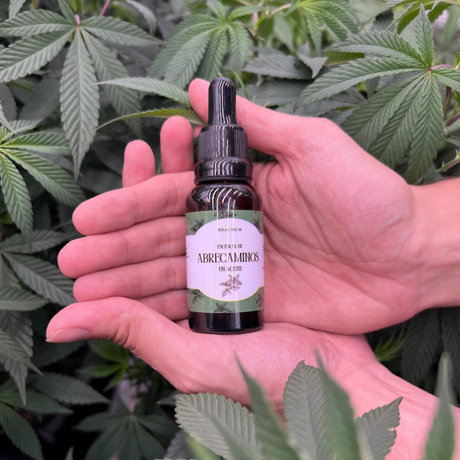
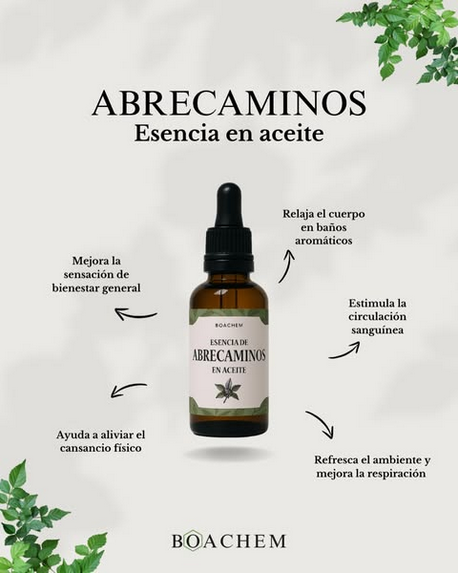
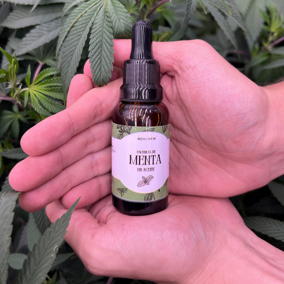
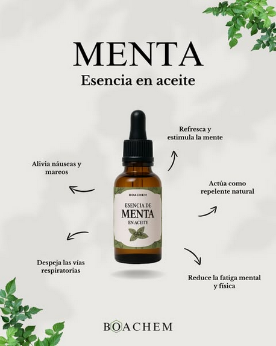
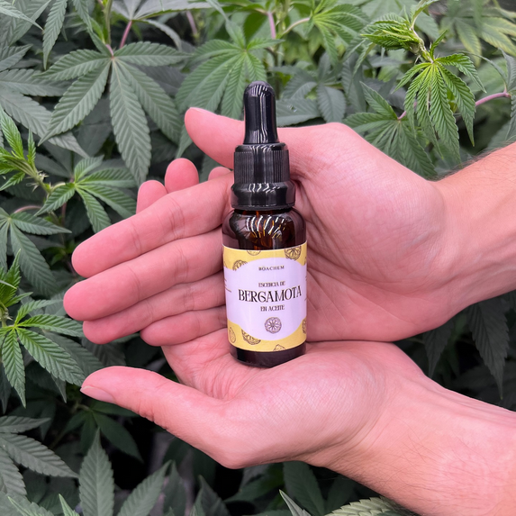
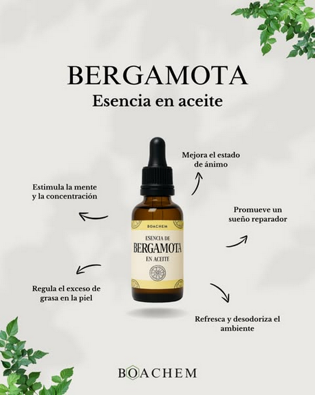
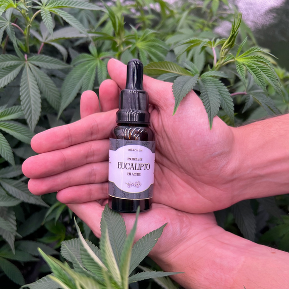
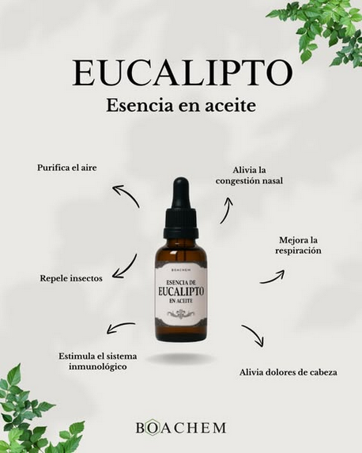
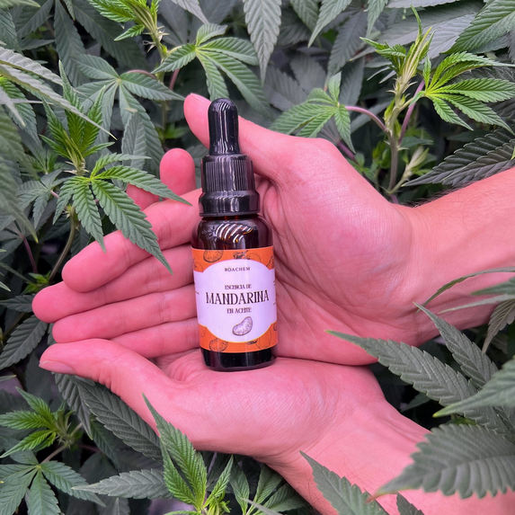
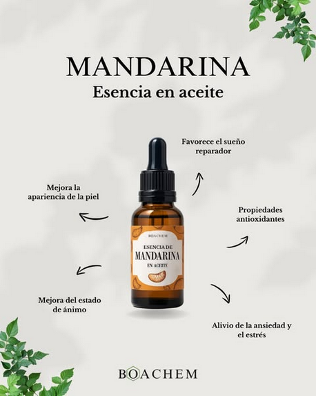
Hidrolatos
Obtenidos de manera simultanea durante el proceso de hidrodestilación de los aceites esenciales. Son extractos acuosos con moléculas más polares que las encontradas en los aceites esenciales, conservan sus propiedades aromáticas pero la concentración de aceite es significativamente más baja, por el contrario, en los hidrolatos están presentes muchas sustancias naturales afines con el agua que no se encuentran en los aceites esenciales.
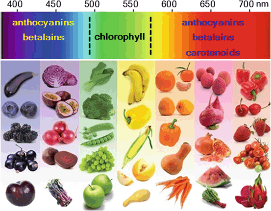
Extractos libres de solventes residuales según pharmacopea USP vigente, testeados por cromatografía de gases con sistema de inyección headspace. A diferencia de los hidrodestilados, los extractos etanólicos, extractos de n-hexano, butanol o CO2 supercrítico, contienen moléculas de alto peso molécular, azucares, aceites vegetales, pigmentos (como la clorofila), flavonoides, carotenos, antocianidinas, polifenoles, etc. Constituyen potentes y concentrados extractos naturales, en la mayoría de los casos, equivalentes a consumir la fruta/hoja/corteza entera de la planta de la que son extraidas y no solo la porción volatil.